La Universidad Nacional Autónoma de México en el ejercicio de sus facultades, competencias y funciones produce y recibe un volumen importante de documentos, mismos que después de su valoración son depositados en los archivos universitarios, y que para estar accesible a la comunidad universitaria, deben estar debidamente organizados, administrados y conservados de manera uniforme para favorecer el conocimiento del pasado tanto como del presente, y con esto planear el futuro de la Institución.

 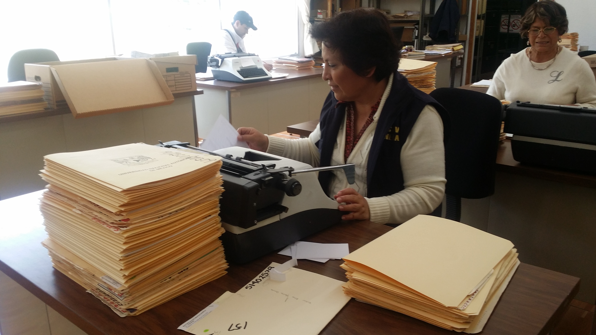
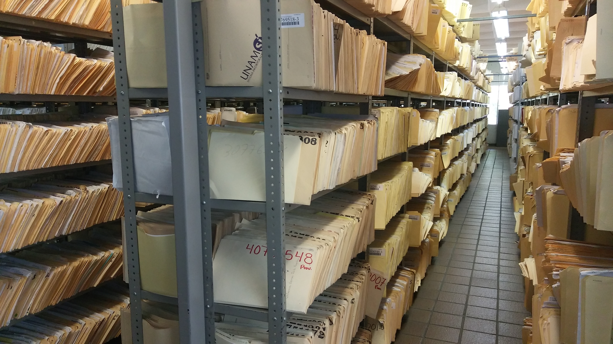
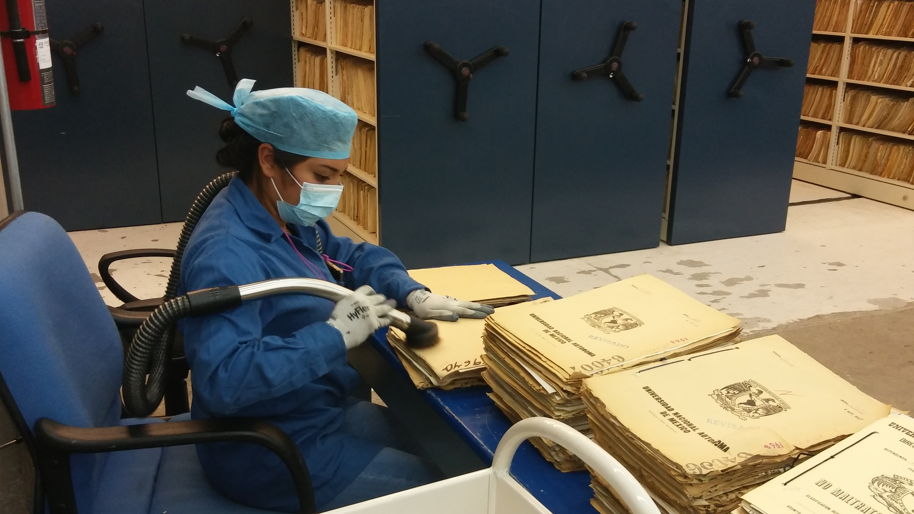
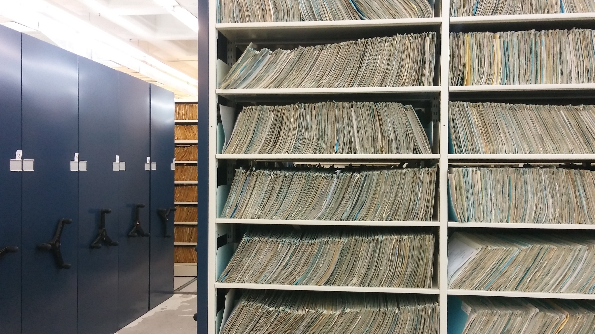
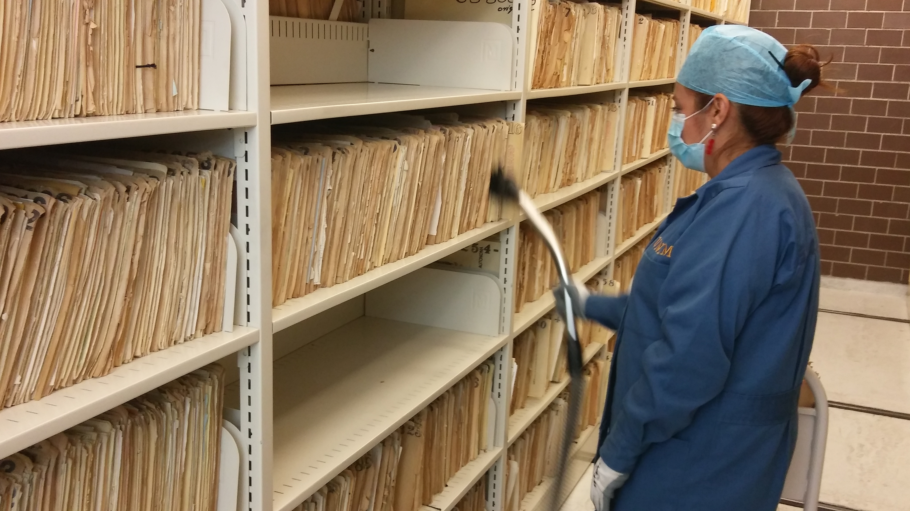
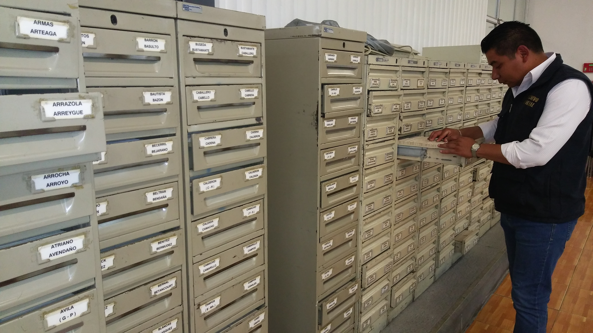
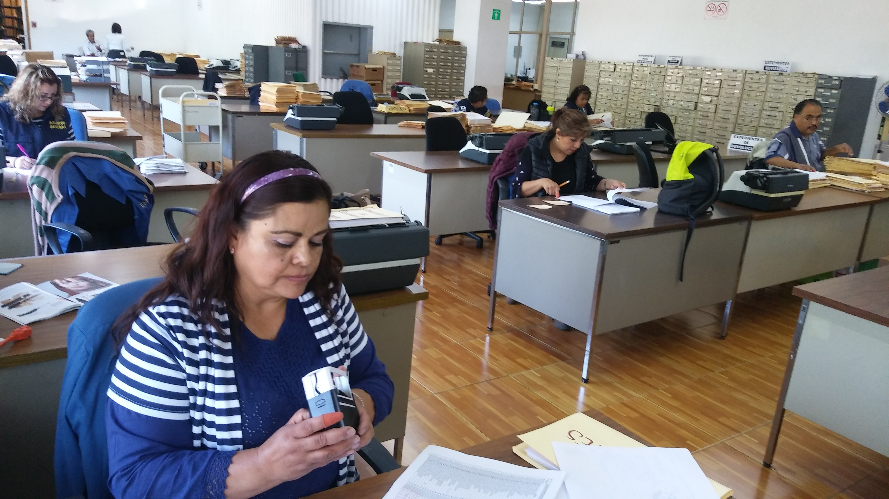
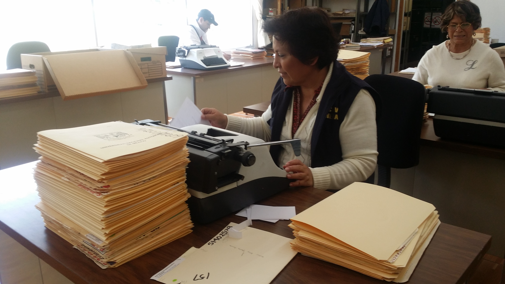
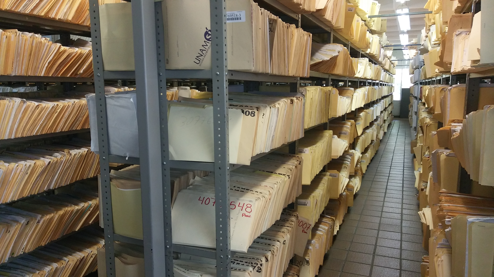
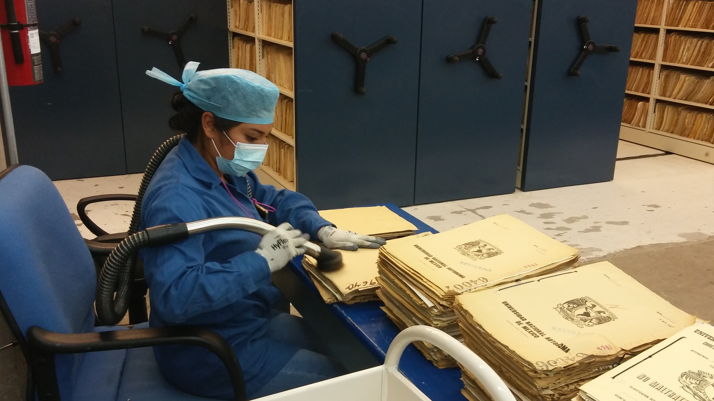
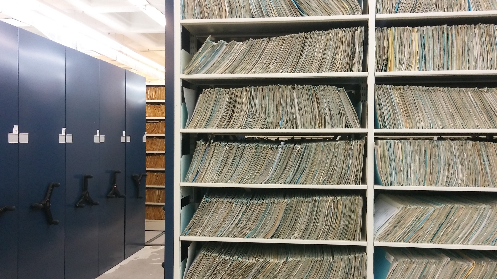
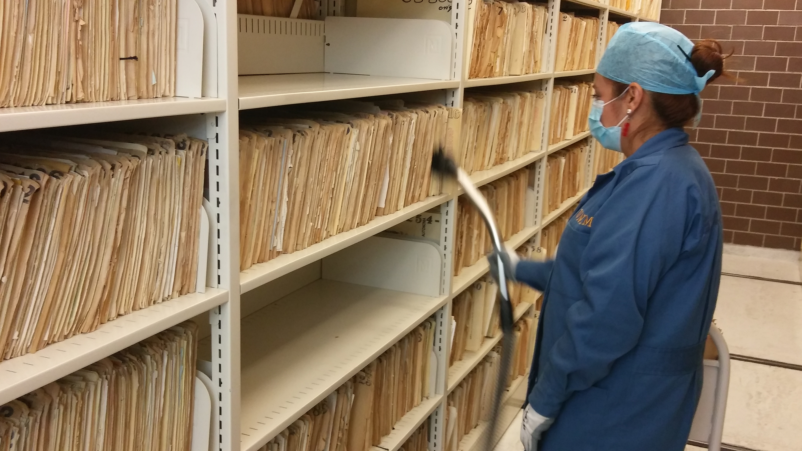
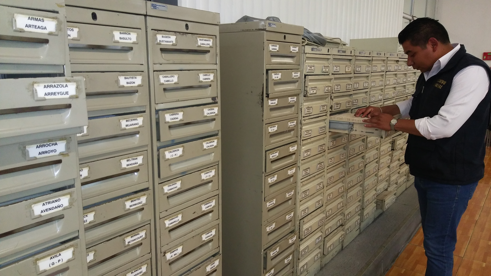
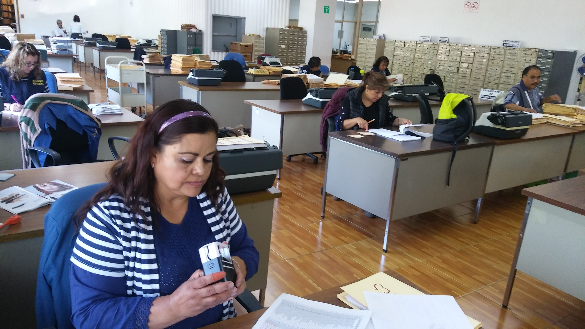

Los archivos universitarios, siendo los repositorios del patrimonio documental contribuyen al desarrollo académico, científico, tecnológico, cultural y administrativo
de la Universidad, por tanto, dada su importancia, el 29 de julio de 2013 el Rector emitió el Acuerdo por el que se establece el Área Coordinadora de Archivos de la UNAM,
instancia encargada de supervisar, emitir y apoyar el cumplimiento de las disposiciones legales en materia de archivos dentro de esta Casa de Estudios, con el propósito de preservar
la memoria histórica, mejorar la eficiencia administrativa, facilitar el acceso a la información y protección de datos personales y contribuir con la rendición de cuentas.
✉ Correo: siaunam@dgsgm.unam.mx
Pasos y requisitos para el retiro de documentos
Formato de Retiro de Documentos
En caso de que el alumno no pueda acudir a recoger su documentación, se debe cumplir con lo siguiente:
| Si el alumno es menor de edad | Si el alumno es mayor de edad |
|---|---|
|
Los documentos serán entregados el día de la cita, UNICAMENTE a la Madre, Padre y/o Tutor, presentando: • Original de la identificación vigente de la madre y del padre o en su caso del tutor legal. • Original de la identificación oficial del alumno en buenas condiciones. • En una sola hoja, copia de las identificaciones de los intervinientes. |
Los documentos serán entregados el día de la cita, UNICAMENTE al apoderado, presentando: • Carta poder simple, dirigida al Archivo General de la UNAM, para el retiro de los documentos. • Original de las identificaciones vigentes del poderdante, apoderado y dos testigos. • En una sola hoja, copia de las identificaciones de los intervinientes. |